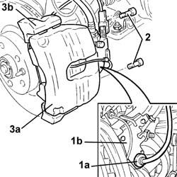
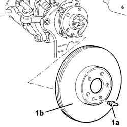

3310A48 FRONT BRAKE DISC (one), left or right - R.R.
- Path
- Procedures > 33 BRAKES > 3310 DISC BRAKES > 3310A FRONT DISC BRAKES > 3310A48 FRONT BRAKE DISC (one), left or right - R.R.
- Kind
- repair procedure (removal / refitting; the operation number is the code)
- Applies to
- all engines; all production periods
- Interactive page
- https://sloeber94.github.io/elrnDB-lThss/en/#/78502
Applies to: all engines; all production periods
 Removing
Removing
 Refitting
Refitting- Position the vehicle on a lift.
See in Op. 4450B10 Front WHEEL (one) - R.R.
1. Release the brake pipe (1a) from the mounting on the bracket (1b).
2. Undo the fixing bolts.
3. Remove the brake caliper (3a) complete with bracket (3b).

Applies to: all engines; all production periods
1. Undo the fixing pin (1a) and remove the brake disc (1b) from the housing in the wheel hub.

Applies to: all engines; all production periods
Refitting
Removing- Fit the front brake disc complete with bracket.
 | Value - daNm | Fastening | Component | Ø |
|---|---|---|---|---|
. | 2 | Pin | FRONT BRAKE DISCS | M10 |
- Torque tighten the brake disc to the wheel hub.
- Fit the front brake caliper complete with bracket.
- Tighten the bolts fixing the bracket to the steering knuckle.
- Secure the brake pipe to the mounting on the bracket.
See in Op. 4450B10 Front WHEEL (one) - R.R.
- Remove the vehicle from the lift.